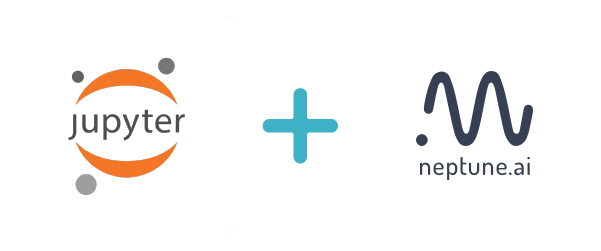

Using Jupyter Notebooks in Neptune
{kind=link}
Jupyter Notebooks are a useful and popular tool for data scientists, regardless of their area of specialization. They allow data scientists to work interactively, keeping code and results - like visualizations - in a single document.
While Neptune is essentially a platform for tracking experiments, it provides Jupyter and JupyterLab extensions that also let you track Jupyter Notebooks.
Key Features
In Neptune, each Notebook consists of a collection of checkpoints that you upload directly from the Jupyter user interface.
In any project, an unlimited number of Notebooks and checkpoints is allowed.
You can browse checkpoints history across all Notebooks in the project.
You can share a Notebook as a link.
You can compare two Notebooks side-by-side, like source code.
Quick Start
To start working with Notebooks in Neptune, install and configure the open source extension for Jupyter or JupyterLab. When you are done, you can start working with Notebooks immediately.
To try it now, without registering to Neptune, look at the sample Notebooks in the public project onboarding. Use the public user’s API token that appears below, and the username neptuner to upload some snapshots to this project. You still need to install and configure Jupyter extension.
Public user’s API token:
eyJhcGlfYWRkcmVzcyI6Imh0dHBzOi8vdWkubmVwdHVuZS5haSIsImFwaV9rZXkiOiJiNzA2YmM4Zi03NmY5LTRjMmUtOTM5ZC00YmEwMzZmOTMyZTQifQ==
Notebook UI
The Notebooks tab in the Neptune UI provides a table of all the Notebooks in the current project.

This view lets you see what your team members are working on, review details and checkpoints associated with a Notebook, as well as share or download a Notebook and compare two or more Notebooks.
The Notebook data is arranged in the following columns:
Name
Owner
Latest checkpoint
Description
In addition, for each Notebook, there are buttons for downloading the Notebook, comparing it with another Notebook, or for sharing a link to it.
A Compare button at the top right displays a Notebooks Comparison pane. See Compare Notebooks.
Notebook contents
Once you select a Notebook, you can see all its contents, that is: code and markdown cells, outputs and execution count.
There are two tabs on the right:
Details: Here are shown the ID, size, creation date, latest checkpoint, owner, description and associated experiments of the selected Notebook.
Checkpoints: Here are listed all the checkpoints of the Notebook. Click a checkpoint to see the details in the main pane. From this tab, you can also access the experiments that are associated with the checkpoint.
You can also view snapshots of the work with the Notebook, as well as download, share or compare this checkpoint with another checkpoint.

Compare Notebooks
The Notebooks Comparison pane lets you compare Notebook checkpoints.
You display the pane by clicking the Compare button anywhere it is visible in the Notebooks pane.

In the Notebooks Comparison pane, select two Notebook checkpoints, then click Compare to see a side-by-side comparison, just like source code.
Differences in code, markdown, output and execution count are highlighted.
Summary information about the differences is displayed at the top of the pane.

Uploading and Downloading Notebook Checkpoints
Notebooks are stored as files on your computer.
Each Notebook file (.ipynb) is a JSON containing everything that the user can see in a Notebook and some metadata.
Neptune uses metadata to associate particular files with Notebook entities on Neptune servers. That means that after a Notebook
is uploaded to Neptune, the file on disk is changed to include the ID of the entity on the Neptune server.
Name changes
If you copy a Notebook file (let’s call it “Notebook A”) and edit it with the intention of creating something completely separate from Notebook A, the association with Notebook A on the Neptune server remains. If the name of the Notebook changes from “Notebook A”, you will be warned.
Global accessibility
When you download a Notebook checkpoint, the ID in the metadata is preserved, so that when, after some work, you click Upload, Neptune knows that this may be another checkpoint in a particular Notebook. You can do some work, upload some intermediate snapshot, go to another computer (or another SageMaker instance, and so on), download the Notebook and keep on working on it.
The capability is comparable to Google Docs in that there’s a place where you store your work and you can access
it easily from wherever you choose.
Collaboration
Depending on their roles, members of a project can view and download all Notebooks (and their checkpoints) in the project.
Viewers can download Notebooks.
Contributors and Owners can also upload them.
When uploading a new Notebook, a user becomes the owner of this Notebook. Only the owner of a Notebook can upload new checkpoints of this Notebook.
Uploading a Notebook
You can upload Notebook checkpoints from Jupyter to Neptune.
To upload the current Notebook as a checkpoint:
Click Upload.
In the dialog that is displayed, select a project from the list.
(Optional) Type in a checkpoint name and description.
Click Upload checkpoint.
{kind=link}
A confirmation message is displayed. You can click the link in the message to open the Notebook in Neptune.
Downloading a Notebook
You can download a specific Notebook checkpoint from Neptune to Jupyter.
To download a Notebook checkpoint:
Click Download.
In the dialog that is displayed, select the following from the respective lists:
{kind=link}
Project
Notebook
Checkpoint
Click Download.